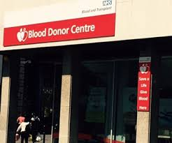

In the beginning, You have to fill the consent form and register yourself in the application by filling the necessary information.
Process Of Donation
You can set the reminders in your appointments section,so that you can get the notification after every three months.You can also track your donations by maintaining the history in your account.
When you reach to the blood bank, they will ask you for health exam.They will be checking your blood type and the amount of blood according to age and size.
Your are saving billions of lives and making their life easier and possible by donating your precious blood. You can also track the number of recipients in your area who are sending love and their wishes to donors.
“ Our role is to develop techniques that allow us to provide emergency life-saving procedures to injured patients in an extreme, remote environment without the presence of a physician. ”
by Chris Hadfiels